KERRY KR-8 Premade-Pouch Packaging Machine
Full-line solutions · Tailored to order *
- Dual-Lane OutputUp to 90 pouches/min
- Dosing Accuracy±1%
- Pouch Types13 styles
- Filling Range10–1000 ml
- Technical Details›
Packaging for all, precision to the last micron
Powerful output, running non-stop.
From every flavor to every form — all bagged with ease.
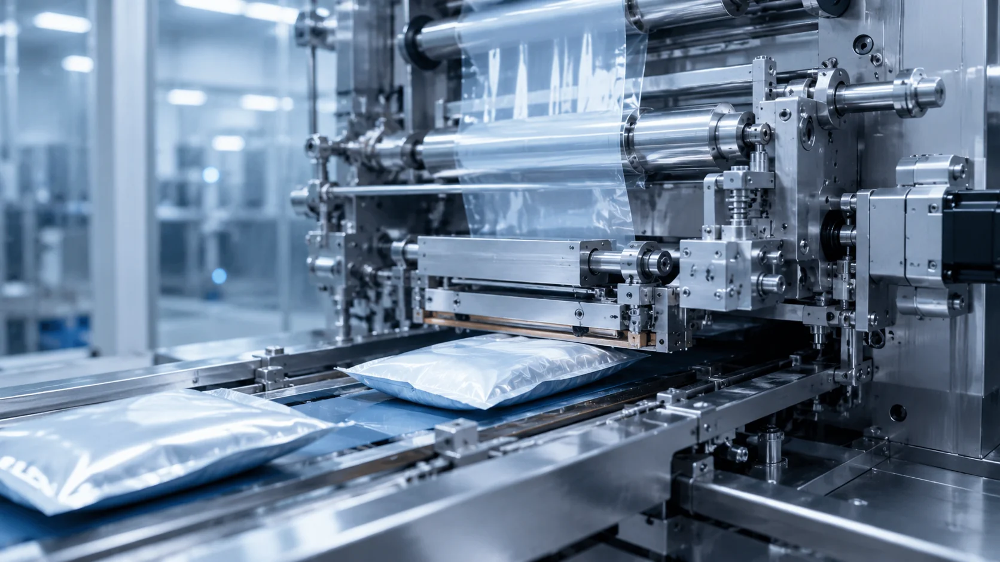
Extraordinary packaging power
arriving with rock-solid stability
where efficiency and quality both excel.
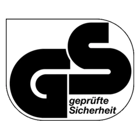
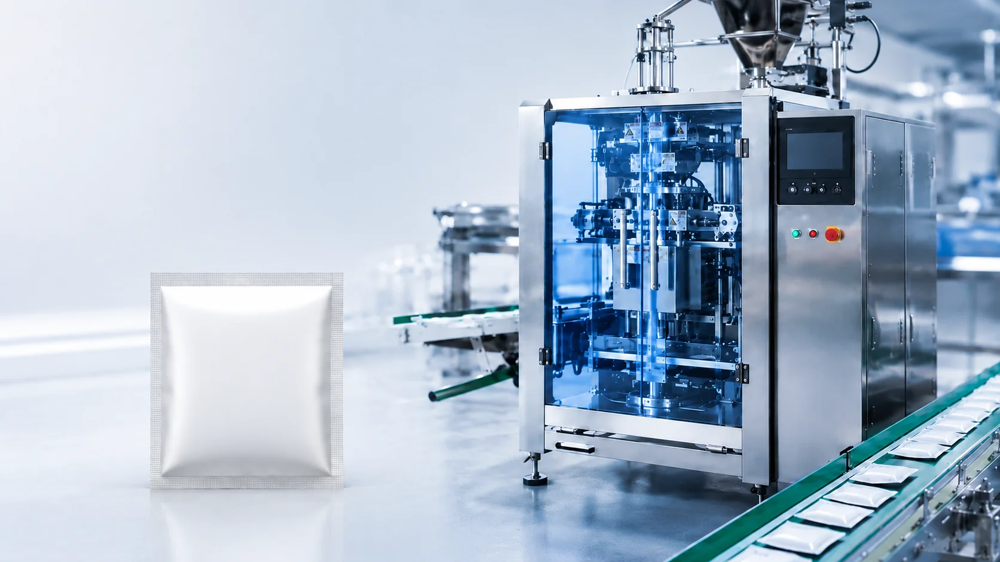
Servo-driven pouch feeding and dosing handle picking, opening, filling and sealing in one fluid cycle. Multi-mode dosing modules suit granules, powders, liquids and pastes, holding accuracy within ±1% so every pouch is exactly alike.
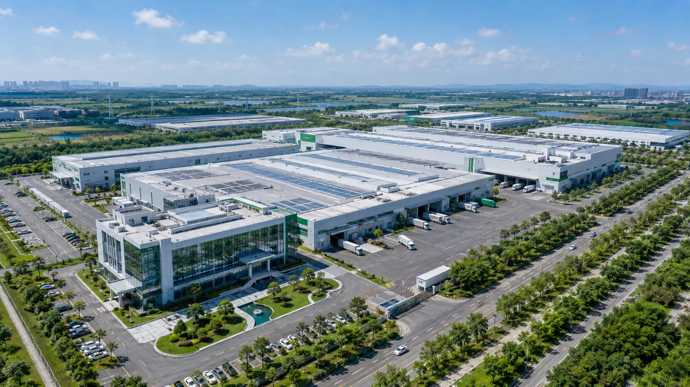
Tens of thousands of m² of modern manufacturing
R&D, precision casting and assembly under one roof
solid strength behind every Kerry machine.
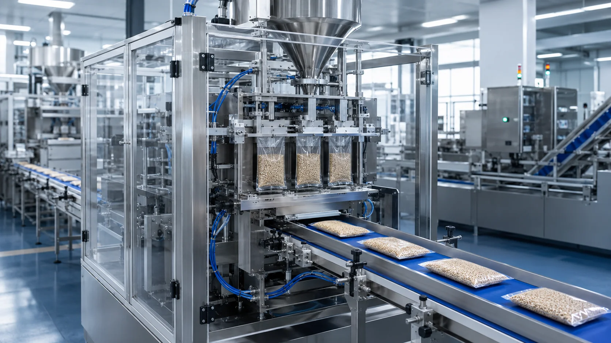
From three-side and four-side seals to stand-up, zipper and shaped pouches, the KERRY KR-8 changes over with ease — handling up to 13 pouch types for tailor-made packaging across materials and brands.
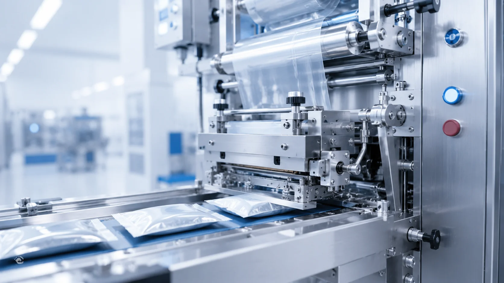
A relentless eye for detail builds durability and reliable performance into every machine. From a single bolt to a single weld — look closely.
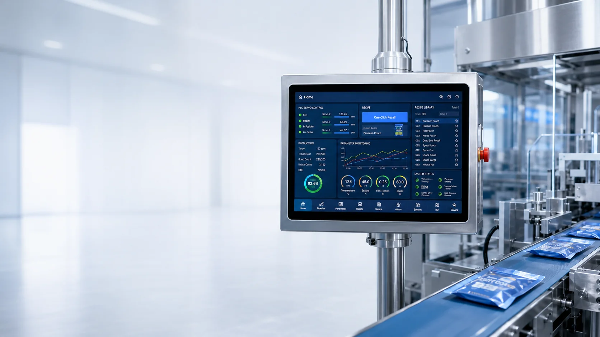
A 10-inch color touchscreen paired with PLC servo control enables one-touch recipe recall and real-time monitoring. Store up to 100 recipes and switch products effortlessly — intuitive to operate, worry-free to run.
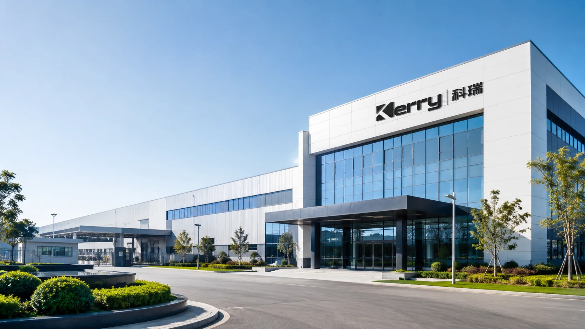
Advanced manufacturing brings quality care everywhere
forward-looking, reimagining production through intelligence.
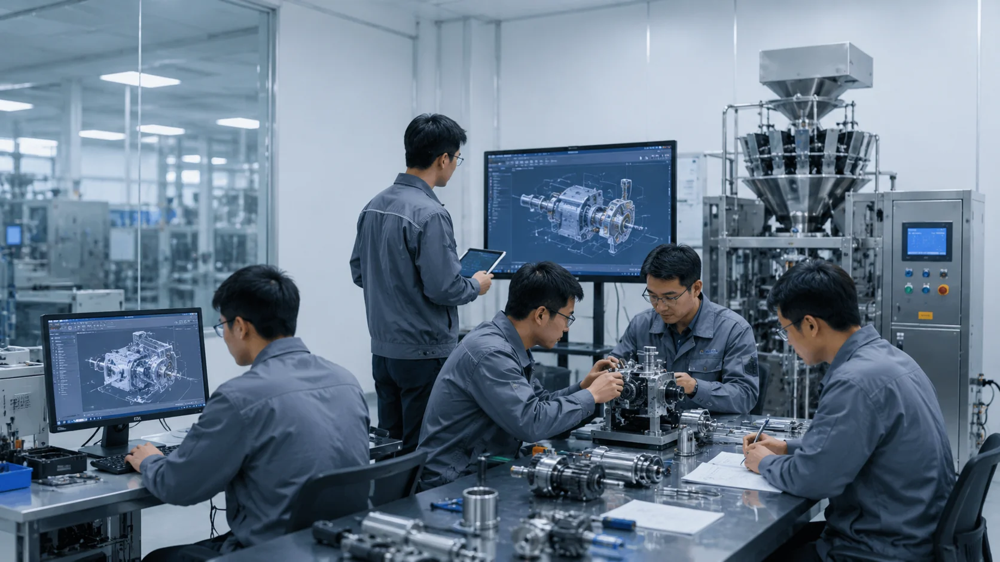
A veteran engineering team with over two decades in packaging machinery, mastering core drive and control technologies in-house. From structural design to process validation, every advance is driven by an obsession with efficiency and precision.
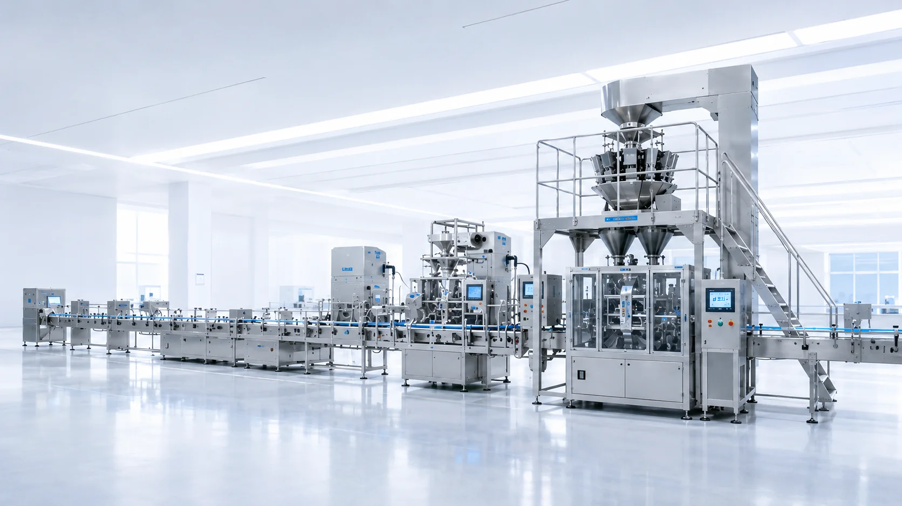
Kerry delivers end-to-end packaging solutions, from single machines to complete lines:
Selection & design · Installation & commissioning · Operator training
Lifetime technical support · Global spare-parts supply